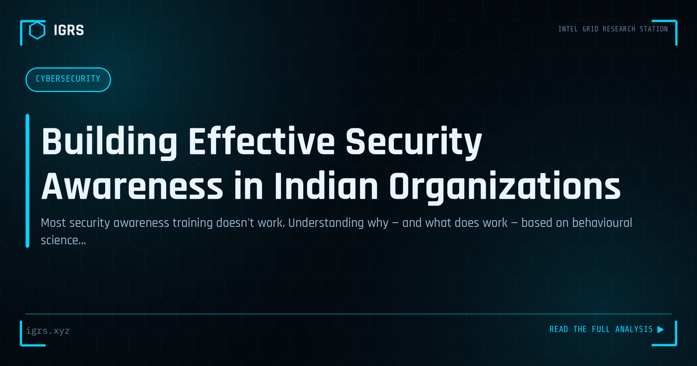

Building Effective Security Awareness in Indian Organizations
| File No. | IGRS-062/2026 |
| Subject | Framework for security awareness programs that change behaviour rather than just deliver information |
| Category | Cyber Awareness |
| Author | Manuj Kumar Pandey |
| Published | 2026-06-09 |
| Reading time | 12 minutes |
Most security awareness training doesn't work. Understanding why — and what does work — based on behavioural science and operational experience in Indian organizations.
Security Awareness Training for Indian Organisations
Technology alone cannot secure an organisation when the majority of breaches involve human error or manipulation. Security awareness training turns employees from the weakest link into an active line of defence. For Indian organisations facing relentless phishing, fraud, and social engineering, effective awareness training is among the highest-return security investments. This guide explains how to build a programme that genuinely changes behaviour.
Why Awareness Training Matters
Most successful attacks exploit people — through phishing, social engineering, weak passwords, and careless data handling. No technical control fully protects against an employee who is tricked into clicking, transferring money, or revealing credentials. Awareness training addresses this human layer directly, building the recognition and habits that stop attacks technical defences miss. It is the complement that makes the rest of the security stack effective.
Core Training Topics
| Topic | Why It's Essential |
|---|---|
| Phishing recognition | The most common attack vector |
| Password security | Prevents account compromise |
| Social engineering | Defends against manipulation |
| Data handling | Supports DPDP compliance |
| Incident reporting | Enables fast response |
Making Training Effective
Effective training changes behaviour, not just awareness. This requires engaging, relevant content rather than dull compliance modules, real examples drawn from the Indian threat landscape, frequent short sessions rather than annual marathons, and practical guidance employees can apply. Training that connects to employees' actual work and the threats they genuinely face produces lasting behavioural change.
Simulated Phishing
Simulated phishing campaigns are among the most effective training tools. By sending safe, realistic phishing tests, organisations measure susceptibility, identify who needs more support, and give employees safe practice at recognising attacks. Done supportively — as learning rather than punishment — simulations build genuine resilience. Repeated over time, they measurably reduce click rates and create a workforce that instinctively scrutinises suspicious messages.
The Indian Threat Context
Training is most effective when grounded in the threats employees actually encounter. In India this includes UPI and banking fraud, vishing calls impersonating banks and authorities, the digital arrest scam, fake KYC and tax messages, and WhatsApp-based scams. Using these familiar, locally relevant examples makes training resonate and prepares employees for the specific attacks they will face, both at work and personally.
Building a Security Culture
Beyond individual training, the goal is a security culture where good practices are normal and questioning suspicious requests is encouraged. This requires leadership support, a blame-free environment where people report mistakes and concerns, recognition of good security behaviour, and consistent reinforcement. A strong culture sustains secure behaviour between training sessions and makes security everyone's shared responsibility rather than an imposition.
Measuring and Improving
An effective programme measures its impact through phishing simulation results, incident reporting rates, and behavioural metrics, then improves based on what the data shows. For Indian organisations, awareness training is not a one-time event but an ongoing programme that adapts to evolving threats. By combining engaging, locally relevant content, regular simulations, and a supportive security culture, organisations transform their people into a capable human firewall — addressing the human element that determines the success or failure of most attacks.